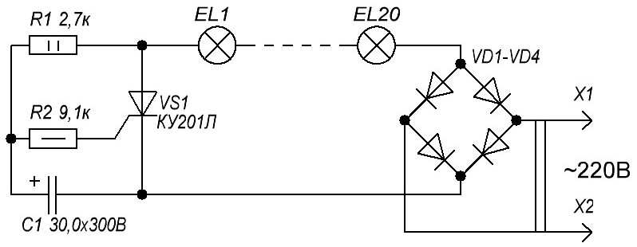
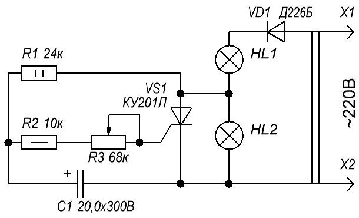

Мигающая новогодняя гирлянда

Рис. 1 - Схема мигающей гирлянды
Элементы R1C1 образуют времязадающую цепь. В первоначальный момент после включения устройства в сеть тиристор закрыт и гирлянда НL1 не горит. Конденсатор С1 заряжается через резистор R1, и при определенном напряжении на нем тиристор открывается.
Частоту переключения новогодней гирлянды можно изменять, уменьшением или увеличением ёмкости конденсатора С1.
Гирлянда загорается, одновременно конденсатор разряжается через резистор и открытый тиристор. Тиристор закрывается, гирлянда вновь гаснет. Процесс повторяется.
Схема проста, не требует налаживания и при исправных деталях начинает работать сразу после включения питания.
В устройство можно использовать следующие детали: диоды любого типа на ток не менее 300 мА и напряжение 250...300 В, например, старые серии Д7, Д226, Д237, или один диодный блок КЦ402, КЦ405, КЦ410 с любым буквенным индексом; тиристор - с такими же рабочими характеристиками, например, КУ201К, КУ201Л, КУ202К - КУ202Н, КУ208В, КУ208Г, ТС122-8, ТС122-9.
Гирлянду составляют из последовательно соединенных ламп накаливания с током потребления не более 0,4 А. Их количество в последовательной цепочке на 12 В должно составлять 20 штук или из 10-и ламп на напряжение 26 В.
При большем токе следует установить диоды более мощные, например Д242Б, а также применить тиристоры КУ202Л (М, Н).
При незначительном усовершенствовании схемы можно использовать переключатель для двух гирлянд с регулировкой длительности свечения (рис. 2). Полного погасания каждой гирлянды во время паузы можно достичь, если гирлянду H1 выбрать со значительно большим током потребления.

Рис. 2 - Схема переключателя двух гирлянд с регулировкой длительности свечения
ВНИМАНИЕ!!! На элементах схемы ОПАСНОЕ напряжение!
Источники:
radiolub.ru - Мигающая новогодняя гирлянда
http://radiostorage.net/3050-prostoj-pereklyuchatel-girlyand-na-odnom-tiristore.html
radiolabs.ru - Переключатель двух гирлянд для ёлки
Борноволоков Э. П., Фролов В. В. - Радиолюбительские схемы.